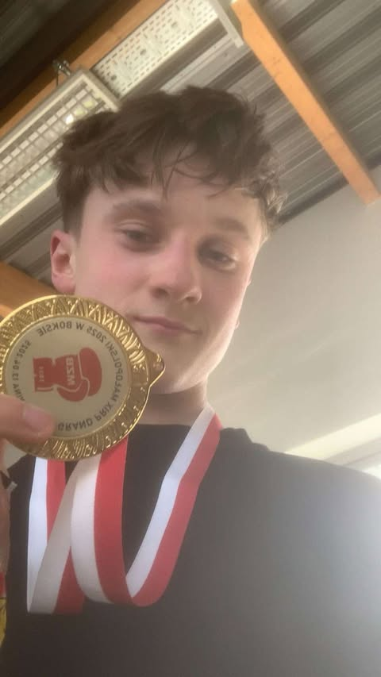
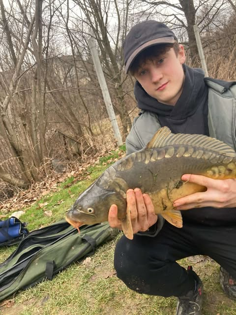
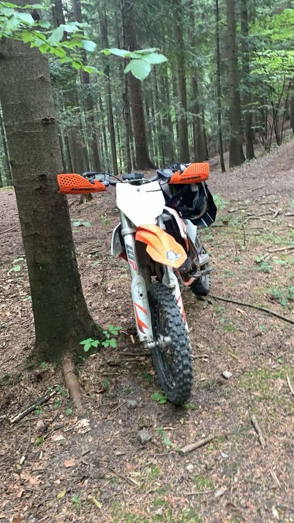

Boks
Moje ulubione hobby, któremu poświecam najwięcej czasu. Uwielbam w nim dyscypline, atmosfere na treningu i dynamike tego sportu.

Wędkarstwo
Następnym moim hobby jest wędkarstwo.Uwielbiam to hobby dlatego, że jest w nim bliski kontakt z naturą. Najczęściej wybieram to hobby gdy chce się wyciszyć.W tym hobby też nie brakuje emocji.

Motocykle
Ostatnim moim hobby są motocykle, Bardzo lubie to hobby, ponieważ jazda na takim motocyklu jest bardzo przyjemna i nie brakuje w niej emocji. Lubię tę pasje również dlatego, że można się dużo dowiedzieć o tym jak działają te sprzęty.